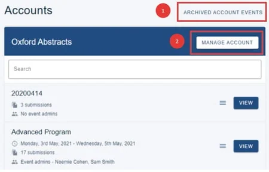
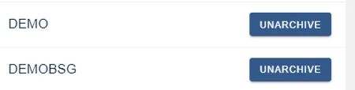
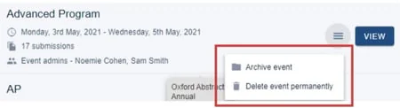

Account administration dashboard
Find out how to access all the tools available to you as an account administrator.#
Register for an Oxford Abstracts account or log in if you already have an account.
When you log into the Oxford Abstracts home page, your first screen is your personal dashboard.
If you have been set up as an account administrator on the system, you will see a list of your accounts at the top of the screen.
In the example below, the user is an account administrator for just Oxford Abstracts. Underneath each account header will be a list of the events for that account. At the top right hand you will see:
(1) Archived Account Events (if there are any)
(2) Manage Account

If you click on Archived Account Events, you will see a list of all your archived events.
Click Unarchive if you would like to restore it. It will then move to your 'active' events.

Click on 2) (above) Manage Account to add event and client admins etc.
To archive or delete and event, click on the hamburger icon and select your required option.

If you choose to archive your event, all data will be retained but the event won't be visible. Deleting your event permanently will erase all data.
Clicking on View will take you to the event dashboard.
Adding a Client admin
Didn't solve it? Ask our support team
No question is too small, and there's no charge for asking. Raise a ticket and someone who knows the software will pick it up.
Did this page solve it?
Thanks — this helps us fix it.